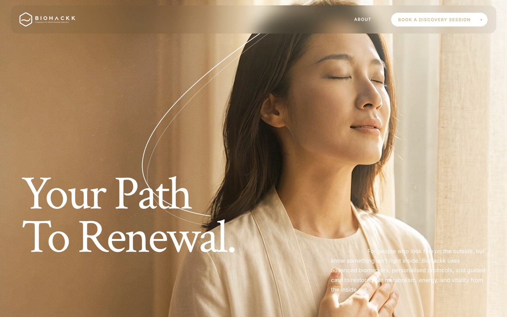
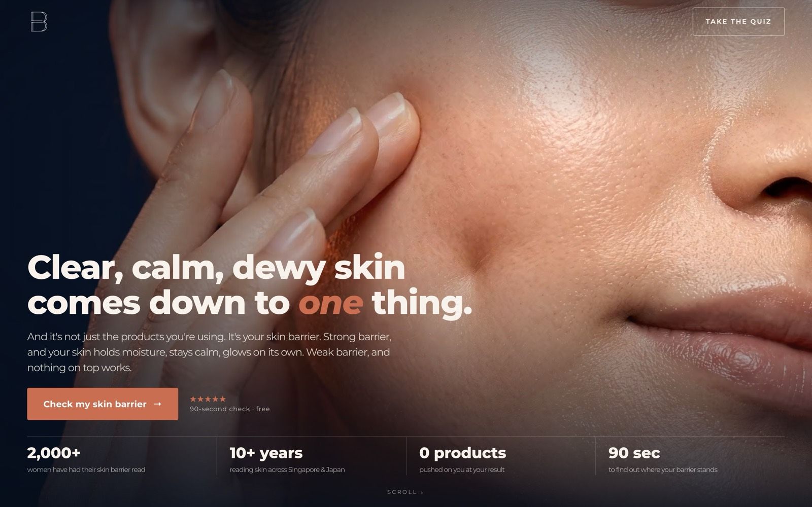
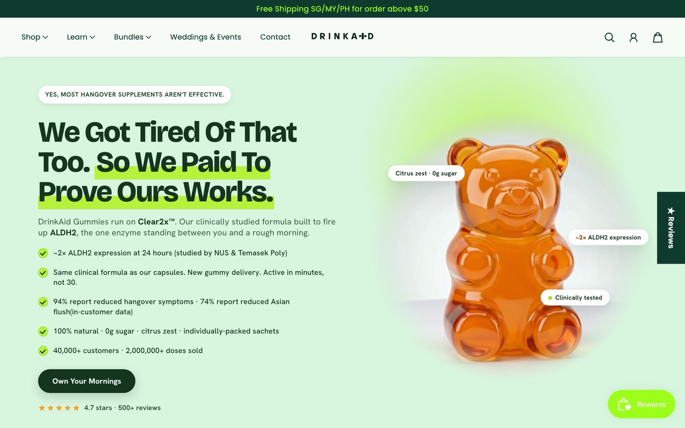
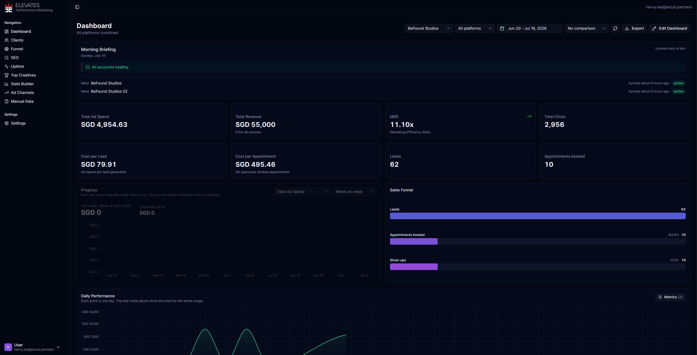
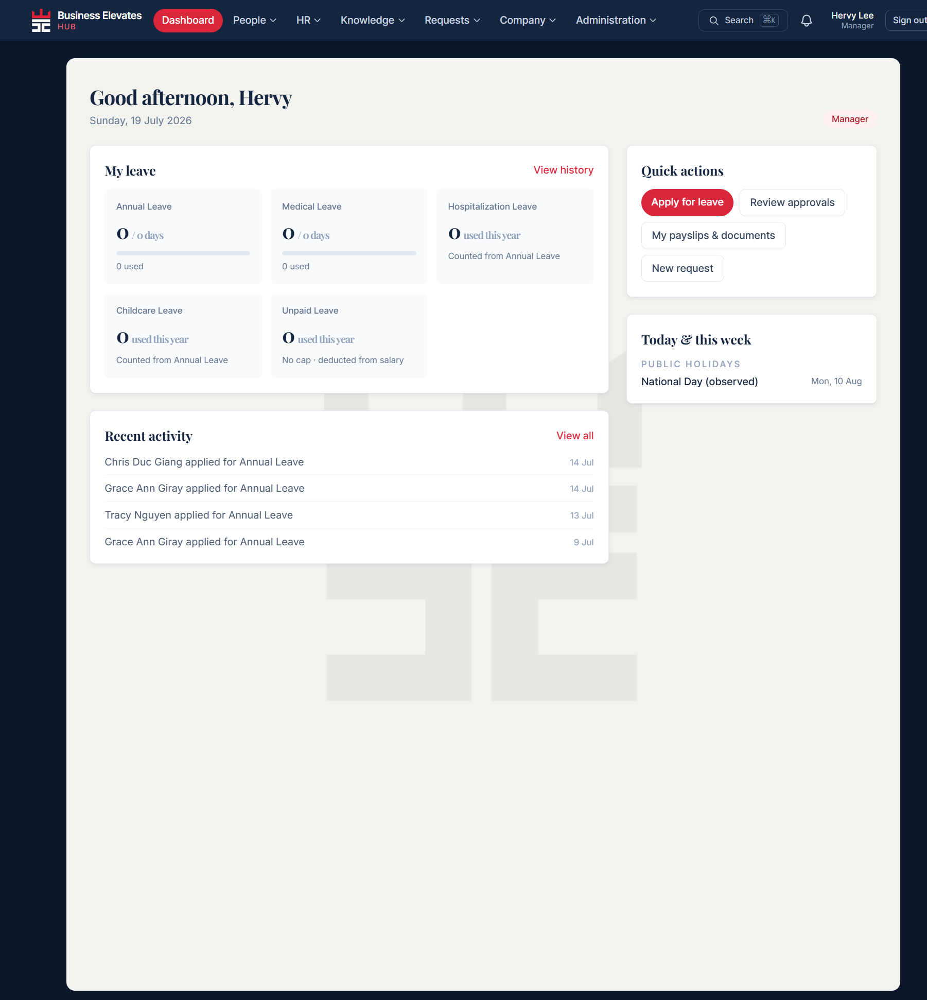

Hervy Lee · Commercial Growth Strategist · Singapore
Most growth problems are commercial problems disguised as marketing problems.
Eight years helping founder-led businesses grow through positioning, offer engineering, and scalable growth systems. I start inside the business (pricing, margins, offers, the sales process) and build the growth engine from there. Along the way I build AI systems that make teams faster, not smaller.
Selected work
Multi-year partnerships, receipts included
Biohackk
Health & wellness · 2022–presentA S$50–70K/month weight-loss business with no clear positioning and lead costs that capped growth. Repositioned around effortless fat loss with a proprietary mechanism, ToxiFat™, then rebuilt offer, pricing, landing pages, creative strategy, and customer journey. Eventually evolved the company's category from weight loss to metabolic health. The lead-cost reduction has been sustained from 2022 through today.

BeFound
Healthcare / beauty · 2024–presentA business growing organically through Instagram and workshops, with no paid acquisition. Positioned the company around Skin Barrier Health, built a quiz funnel, redesigned the landing pages, and stood up its first paid acquisition engine: a full appointment-to-close funnel around a ~S$3.5K programme.

DrinkAid
Consumer / DTC · 2026A hangover supplement acquiring customers at a loss. Audited the account, built a unit-economics simulator across the full pricing ladder, then rebuilt the front end: 5/7/9-pouch buy-N-get-free bundles on a dedicated landing page with new campaigns, so customers are acquired at a profit on the first order. Created the Clear2X™ proprietary positioning around increased ALDH2 enzyme expression.

The Edu Experience
Education · 2023–2026Worked closely with the founder to create the Unlimited Tuition commercial model and built scalable acquisition systems (location-level campaigns supporting each new centre) through expansion from a single centre in Tampines to four strategic locations across Singapore.
Approach
Every engagement follows this orderEconomics before advertising
Before thinking about channels I understand unit economics, margins, customer behaviour, existing offers, the sales process, and fulfilment capacity. Paid acquisition scales what the commercial foundation supports, rarely the other way around.
Competitor promises, category norms, and what buyers have already learned to scroll past.
Voice-of-customer research: the exact words buyers use, gathered before any copy is written.
Positioning that owns something
Proprietary mechanisms give a brand ground competitors cannot easily copy: ToxiFat™, Clear2X™, GentleMelt™, StageWise™, Skin Barrier Health, Unlimited Tuition.
The offer is usually the biggest lever
Price, value stack, guarantees, bundles, anchoring. At DrinkAid, better ads and a dedicated lander brought front-end CAC from S$40–50 down to S$15–20, but it was the bundle offer lifting AOV that gave the brand the margin to actually scale.
Design and direct response, together
Most direct response still looks tacky. Good design increases trust, good copy increases desire, and together they outperform either alone.
Concepts built as angle, persona, offer, and format combinations, then tested in structured batches.
Simple account structures and clean tests; budget follows the signals coming back.
Evidence over claims
Every number on this page is measured from live dashboards, documented in account history, or explicitly labelled as modelled. That discipline is the work.
Systems over heroics
SOPs, dashboards, training, and AI-enabled operating systems (proposal, landing page, and copy generators; reporting; knowledge bases) so a business never depends on one person.
AI projects
Internal software, built with AI, used daily
Elevates Dashboard
Client reporting platform · in productionEvery number in the case studies above comes from somewhere, and this is the somewhere. A reporting platform that syncs ad accounts, funnel stages, and manual data into one live view per client, with a morning briefing that flags account health before anyone has to ask. Clients watch their real economics move; the team stopped assembling screenshots at report time. Permanently a work in progress, because keeping reporting data accurate is a job that never actually finishes.

Elevates HUB
Internal HR & operations portal · in productionThe unglamorous software that keeps a four-person team running like a bigger one: leave, approvals, payslips, documents, and the knowledge base in one place. Built because a small agency has no business paying enterprise HR prices, and no excuse for tracking leave in a group chat.
Both built in-house with AI, alongside the proposal, landing page, and copy generators the team runs on day to day.
About
Depending on who you ask, I am a media buyer, a designer, a copywriter, a funnel builder, or the ads guy. I have worn all of those hats professionally, and I answer to every one of them. The job underneath has never changed: understand why a business grows, then build the system that makes it repeatable.
I lead a small team and coach rather than micromanage, partly on principle and partly because micromanagement does not survive contact with a four-person company. Everyone should understand the commercial objective behind their work, not just complete tasks. It makes for better marketers and much shorter meetings.
Off duty I am usually behind a camera chasing good light, or holding a Guinness. I maintain that both count as research.
Currently
- Co-Founder & Commercial Growth Strategist, Business Elevates
- Based in Singapore
- Bachelor of Business, RMIT University
Tools
- Meta Ads · GA4 · Google Tag Manager
- Webflow · Shopify · WordPress · Figma
- Klaviyo · ActiveCampaign · GoHighLevel
- Claude · Make · Zapier · Notion · Vercel
If you've read this far, we should probably talk.
I'm always glad to talk growth, compare notes, or walk through the detailed case studies. Email is the fastest way to reach me.